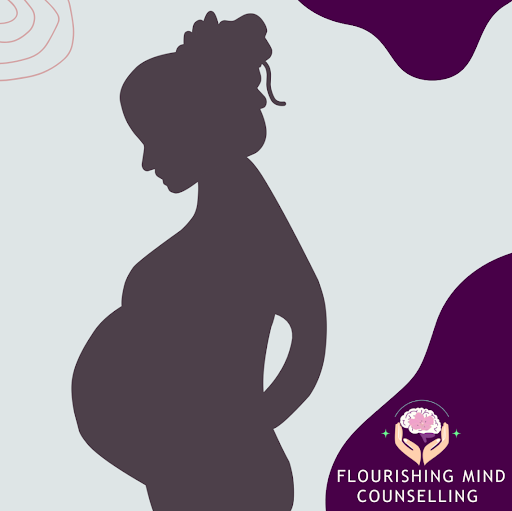
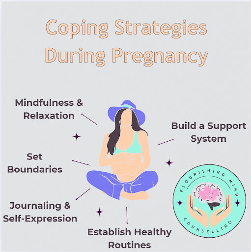
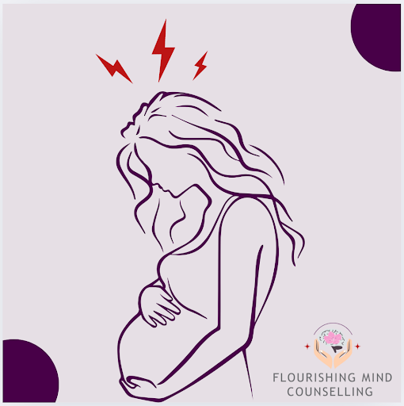
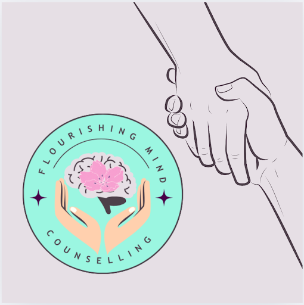

Pregnancy & Mental Health: A Supportive Resource Guide
Welcome to a Safe Space for Your Pregnancy Journey
Pregnancy is a transformative experience—one filled with excitement, hope, and sometimes, unexpected challenges. At Flourishing Mind Counselling, we understand that this journey can bring a wide range of emotions, from joy and anticipation to stress and anxiety. You are not alone. This resource page is here to offer guidance, support, and reassurance as you navigate this important chapter in your life.

Common Emotional Challenges During Pregnancy
It is natural to experience emotional ups and downs during pregnancy. However, when these feelings become overwhelming, it may be time to seek support. Some common mental health challenges during pregnancy include:
- Pregnancy-related anxiety - Worries about health, labor, and parenting.
- Mood swings and emotional distress - Fluctuations in hormones can impact emotions.
- Prenatal depression - Persistent sadness, loss of interest, or excessive fatigue.
- Body image concerns - Struggles with physical changes and self-esteem.
- Relationship difficulties - Stress or conflicts with partners, family, or friends.
- Guilt and self-doubt - Questioning decisions, abilities, or feeling unworthy.
- Identity struggles - Adjusting to the evolving sense of self during pregnancy.
- Feelings of isolation or loneliness - Experiencing disconnection from others or lack of support.
Recognizing and addressing these issues early can make a difference in your well-being.

Coping Strategies & Self-Care Tips
- Mindfulness & Relaxation - Practice deep breathing, guided meditation, or prenatal yoga.
- Build a Support System - Connect with loved ones or join prenatal support groups.
- Establish Healthy Routines - Prioritize sleep, balanced nutrition, hydration and gentle movement.
- Journaling & Self-Expression - Write down your thoughts and feelings to process emotions.
- Set Boundaries & Reduce Stress - Learn to say no and prioritize self-care without guilt.
When to Seek Professional Support
Seeking professional support is not just for those experiencing severe distress. Therapy can be beneficial for anyone looking to strengthen their emotional well-being, gain clarity, and develop healthy coping strategies during pregnancy. Whether you're struggling with challenges or simply want to prioritize self-growth, support is available.
Sometimes, emotional challenges can feel too overwhelming to manage alone. It may be time to seek professional support if you experience:
- Persistent sadness, hopelessness, or frequent crying.
- Overwhelming anxiety or panic attacks.
- Difficulty bonding with your baby or feeling disconnected.
- Severe mood swings, irritability, or feelings of worthlessness.
- Trouble sleeping or eating due to stress and worry.
- Thoughts of hopelessness or distress—if you are in crisis, please seek immediate help. Call 9-1-1, present yourself to the nearest emergency department, or contact a crisis helpline for immediate support. You can also reach the Suicide Crisis Helpline by calling or texting 9-8-8.
Reaching out for help is a sign of strength, and professional support can provide tools to help you navigate this period with confidence and peace of mind.

How Flourishing Mind Counselling Can Help
At Flourishing Mind Counselling, we offer a compassionate, client-centered approach to mental well-being during pregnancy. Our therapy sessions can help you:
- Manage anxiety and mood changes.
- Process past trauma or fears related to childbirth.
- Strengthen your confidence in pregnancy and motherhood.
- Develop coping strategies to reduce stress.
- Navigate identity changes and embrace personal growth.
- Address feelings of isolation and build meaningful connections.
- Work through body image concerns and foster self-acceptance.
- Overcome guilt and self-doubt to cultivate self-compassion.
We provide phone and video therapy sessions to best suit your needs.

You Are Not Alone - We Are Here to Support You
Pregnancy is a journey, and every step you take matters. Whether you are feeling overwhelmed or just need a listening ear, we are here to help. If you're ready to explore therapy or have questions, we invite you to reach out.
Take the Next Step Toward Well-Being
📞 Call us: 613-227-7212
📧 Email: admin@flourishingmindcounselling.ca
🌐 Schedule a consultation